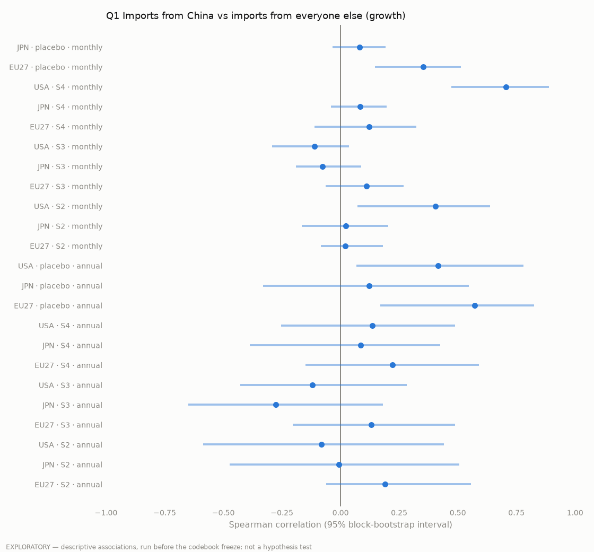
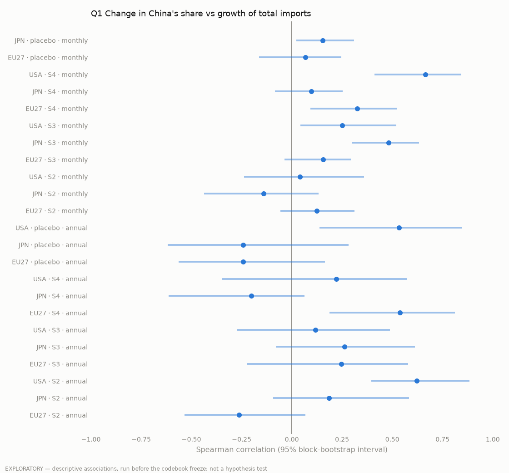
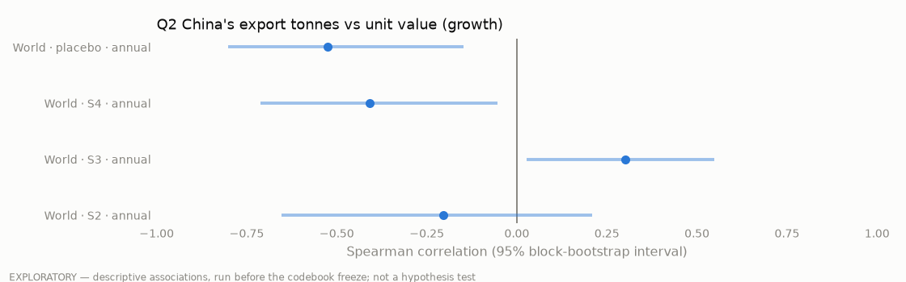
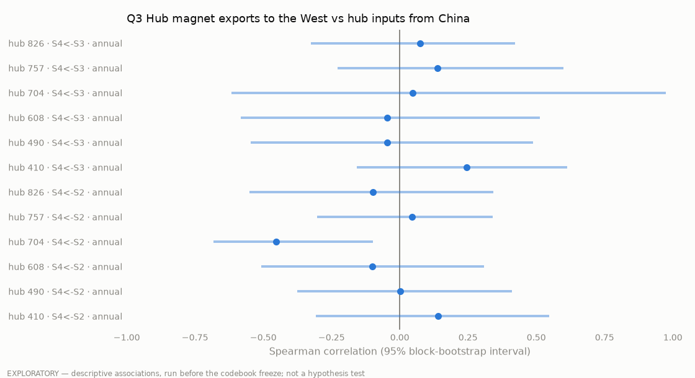
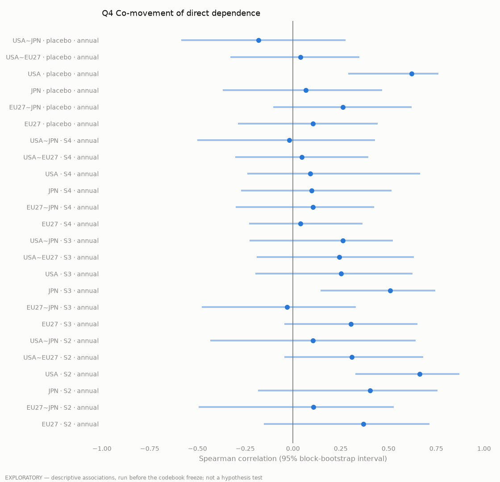

Page 10 of 10
Methods & limits
Data. Bilateral trade for six rare-earth product codes and a placebo (non-rare-earth magnets), from CEPII BACI (HS92, 1995–2024), by weight first and by value alongside. "The West" means the United States, Japan and the EU27, with trade between EU members left out. The monthly chart for 2024–2026 uses the buyers' own records (UN Comtrade for the US and Japan, Eurostat Comext for the EU), because China has not yet published its 2025 export data.
Dependence. Direct dependence is the share of a country's imports that comes from China. One-hop dependence adds China's share inside each supplier's own imports, assuming those Chinese inputs are spread evenly across what the supplier sells.
Text analysis. We classified 576 Chinese government documents (1999–2026) with a dictionary of eight frames, and report each frame's share with bootstrap intervals.
The predictor. For a chosen year and stage, it removes China's sales to the West and counts what other exporters now sell elsewhere, discounting the Chinese content of their own exports. [Parth: two or three sentences from predictor_method.md]
How we used AI. Claude helped us draft the texts and write code; Claude Code ran the data pulls and calculations. Every number comes from code we can rerun, and each claim is tied to a primary source listed under it.
Limits. Trade data show where goods go, not who has the plants to refine them. The ore code (HS 253090) includes many non-rare-earth minerals, so we do not use ore tonnages. The magnet code (HS 8505.11) includes some non-rare-earth magnets, and the placebo shows a similar hidden dependence, so part of what we measure is China's weight in manufacturing in general. The correlations on this page are exploratory: they compare growth rates and do not test our hypotheses. All figures are drafts computed in October 2026.
Read with care
What the trade data can and cannot show
Read with care
- The map draws only the largest flows per stage and year (top 60 by value and by weight, plus China's top 30 exports and the top 30 imports of the USA, Japan and EU27). Totals and shares use all flows.
- 8505.11 covers all metal magnets, not only rare-earth ones. The EU separates rare-earth magnets only from 2023.
- Ore codes are catch-all lines, so S1 is an upper bound.
- BACI reconciles exporter and importer reports, so figures can differ from national statistics.
- Hong Kong, Macao and "Other Asia nes" (Taiwan) are kept apart from China.
Predictor · formulas
How the gap and the refill ceiling are computed
The gap
For importer i at one stage and year, with wj the share of its imports from partner j:
c(j), the Chinese content of partner j's exports, is proxied by j's own import share from China: at the same stage (re-export) or the stage before (the partner processes Chinese inputs). "Larger of the two" is the upper bound.
The refill ceiling
Only supply that now goes somewhere else can be diverted: shipments between Western countries add nothing to the bloc. China is a destination like any other, so ore and carbonate now sold to Chinese refiners count. Here c(k) is capped by mass balance: k cannot ship more Chinese material than it imports from China (a magnet is taken as 30% rare earth by weight). The bloc is set by the West switch at the top: by default the USA, Japan and EU27 (extra-EU trade only); the alternative is the wider West of 38 countries (EU27 extra-EU plus ten non-EU importers). Exports to countries outside the chosen West count as divertible. The ceiling is shared pro rata.
Coverage of China's direct sales = pool ÷ (cut × China's direct sales to the bloc), not capped at 100%. At the defaults (100%, 100%, larger of the two, tonnes, 2024, default West) it is the figure in coverage_split_2012_2024.csv.
Exploratory
Correlations





Exploratory: correlations of growth rates, not tests of our hypotheses
Where the project stands · 20 Oct 2026
What is done, and what is still to come
- Trade panel (BACI, 1995–2024)AcquiredBilateral flows for all six codes and the placebo. Used in chapters 2 and 3.
- Chinese policy corpusPreliminary576 documents analysed: topics, framing dictionary, distinctive vocabulary.
- Western policy corpusStarted87 US documents analysed in figures only. EU and Japan not started.
- Policy event listDraft60 events, 41 verified against primary text. Coding provisional.
- Data auditPendingMonthly China series has a gap from Oct 2012 to Dec 2015. US 10-digit data blocked.
- Dependence measures (H3)PendingDirect and one-hop, by stage, for the USA, EU27 and Japan.
- Structural-break tests (H1, H2)PendingMonthly series by stage, ±12-month windows around each event.
- Exposure simulatorPendingWill go live on this site once dependence is computed.
Source notes
Where the numbers come from
Data: CEPII BACI HS92 V202601 · USGS Mineral Commodity Summaries · group event list and text corpus. Every result on this site is descriptive or preliminary.